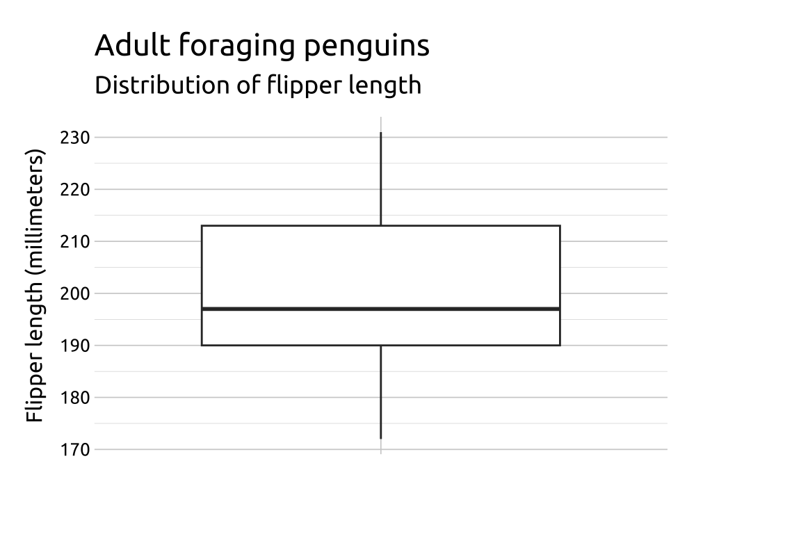
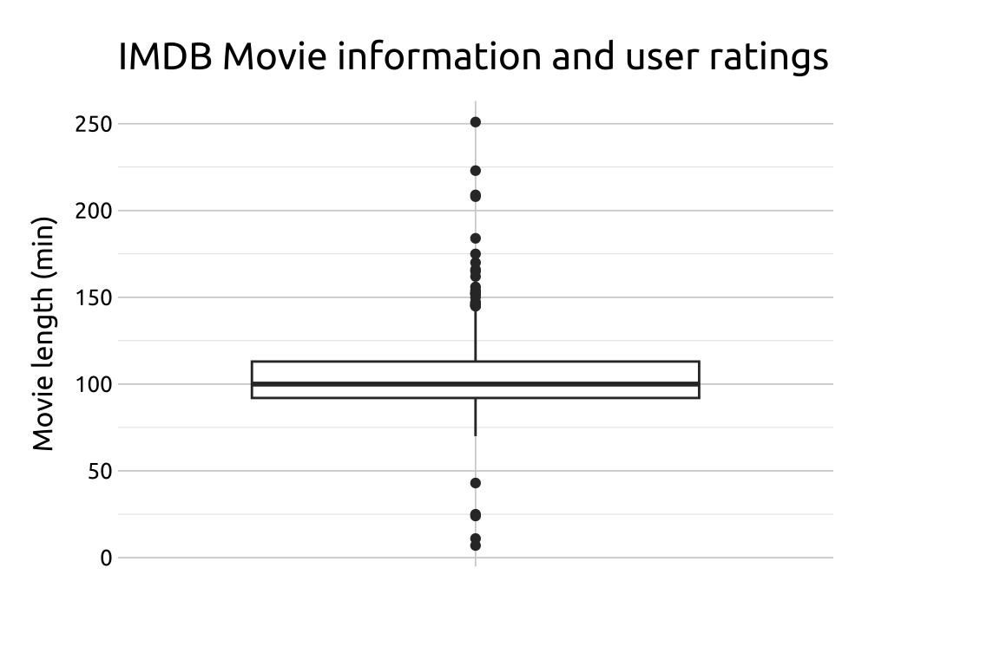
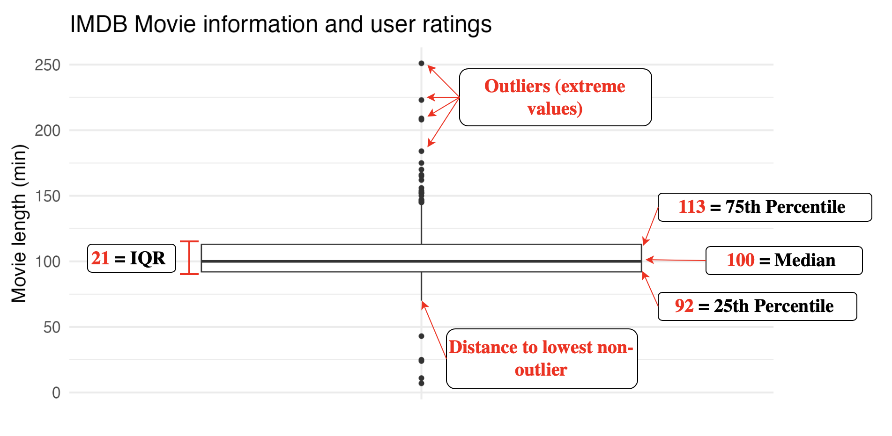
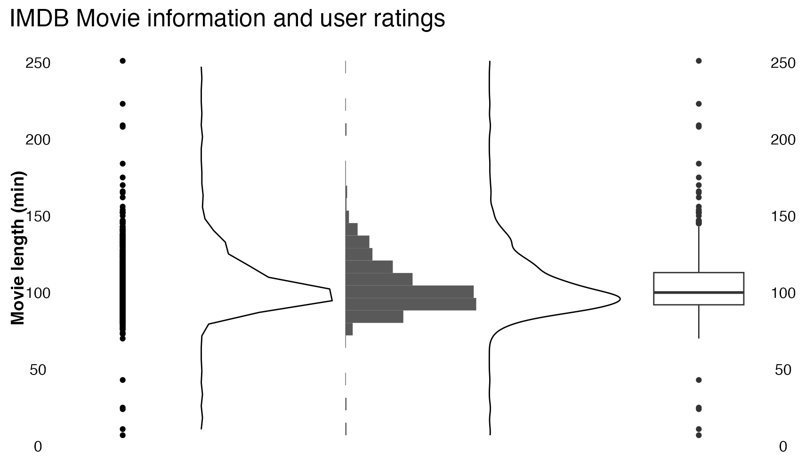

7 Box plots
7.1 Description
Box plots (sometimes called box-and-whisker plots) use position, lines (vertical and horizontal), and points to convey a collection of summary statistics in a single graph.
7.2 Set up
PACKAGES:
Install packages.
Code
install.packages("palmerpenguins")
library(palmerpenguins)
library(ggplot2)DATA:

We’ll be using the penguins data from palmerpenguins.
Code
penguins <- palmerpenguins::penguins
glimpse(penguins)
#> Rows: 344
#> Columns: 8
#> $ species <fct> Adelie, Adelie, Adelie…
#> $ island <fct> Torgersen, Torgersen, …
#> $ bill_length_mm <dbl> 39.1, 39.5, 40.3, NA, …
#> $ bill_depth_mm <dbl> 18.7, 17.4, 18.0, NA, …
#> $ flipper_length_mm <int> 181, 186, 195, NA, 193…
#> $ body_mass_g <int> 3750, 3800, 3250, NA, …
#> $ sex <fct> male, female, female, …
#> $ year <int> 2007, 2007, 2007, 2007…7.3 Grammar
CODE:
Create labels with labs()
Initialize the graph with ggplot() and provide data
- Assign a blank character string (
"") to thexaxis inlabs()
Map flipper_length_mm to the y axis and an empty string ("") to the x axis
Add the geom_boxplot() layer
Code
labs_boxplot <- labs(
title = "Adult foraging penguins",
subtitle = "Distribution of flipper length",
x = "",
y = "Flipper length (millimeters)")
ggp2_boxplot <- ggplot(data = penguins,
aes(x = "",
y = flipper_length_mm)) +
geom_boxplot()
ggp2_boxplot +
labs_boxplotGRAPH:

7.3.1 More Info
Below is more information on interpreting Box plots.
7.3.2 movies data
We’ll use the ggplot2movies::movies data to create a box plot for movie length
Code
install.packages("ggplot2movies")
library(ggplot2movies)
library(ggplot2)Filter ggplot2movies::movies to only include films after the made after 2000, and remove missing values from mpaa and budget
Code
movies_box <- ggplot2movies::movies |>
dplyr::filter(year > 2000 &
mpaa != "" &
!is.na(budget))
head(movies_box)Below we create a box plot of the length variable using the methods described above:
Code
labs_boxplot <- labs(
title = "IMDB Movie information and user ratings",
y = "Movie length (min)", x = "")
ggp2_boxplot <- ggplot(data = movies_box,
aes(x = " ",
y = length)) +
geom_boxplot()
ggp2_boxplot +
labs_boxplot
7.3.3 Interpret
The table below shows the 25th percentile, the median, the 75th percentile, the IQR, and a histogram of the length variable from the movies_box dataset.
| 25th | Median | 75th | IQR | Histogram |
|---|---|---|---|---|
| 92 | 100 | 113 | 21 | ▁▇▅▁▁ |
The figure below displays how each element in the box plot represents each of the statistics using lines and points.
In ggplot2, values that fall more than 1.5 times the IQR are displayed as individual points (aka outliers). The lines extending from the bottom and top of the main box represent the last non-outlier value in the distribution.

7.3.4 Compare
Compare the geom_point(), geom_freqpoly(), geom_histogram(), and geom_density() graphs of length from movie_box below to the geom_boxplot():
